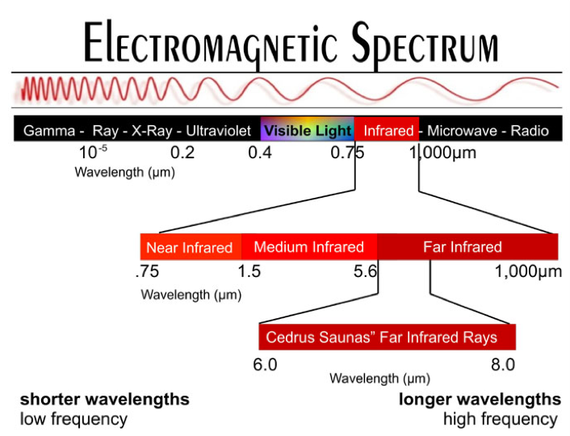

Infrared LEDs
Infrared LEDs are light-emitting diodes that only emit light in the infrared spectrum. They are not visible to the human eye, but they are visible to a phone camera - especially if its an old phone without an IR filter (because that was a problem which we encountered)!
They way in which the IR Leds work in order for the sensors to pick them up, is that they have to modulate at two different frequencies. One frequency is the carrier frequency, for the TSOP4038 its 38kHz, and the sensor will not pick up any data unless the sensor is modulating at that carrier frequency. Once it is, the sensor will pick up other data, which is transfered in the form of another frquency.
So, the task for the IR led was to modulate something like this:
At first, we didn't know all of this and we then tried shining the IR leds with no modulation onto the sensor and got no response. We had to go back and read up on what an IR sensor actually detects at this point. Next, we used the instructions from Zovirl Industries as a base, and modified the code to our needs.
To be honest, this code wasn't completely clear to us, but we tried to parse it and used it anyway.
There was a time when the leds stopped turning on, and we had thought that the leds were drawing too much power or that they weren't communicating with the arduino anymore. It turns out, that the leds were getting short circuited because the IR sensors were slightly exposed (not completely covered with heat shrink) and short circuiting themselves.
In the meantime while we were debugging why the IR leds kept short-circuiting we created new code to modulate the LEDs, this time, we went about it correctly. By this, I mean understanding what the IR LEDs needed to be doing and constructing our own code to do so. In this code, we turn the voltage on and off for the carrier frequency, using the millis and the inverse of the frequency (period). Then, when the voltage is on, a boolean constant,isOn, is set to true and we digitalWrite the voltage to modulate at the second frequency.
In the end, the IR LED wasn't giving us as many problems as we though, but it was cool to learn about and use !